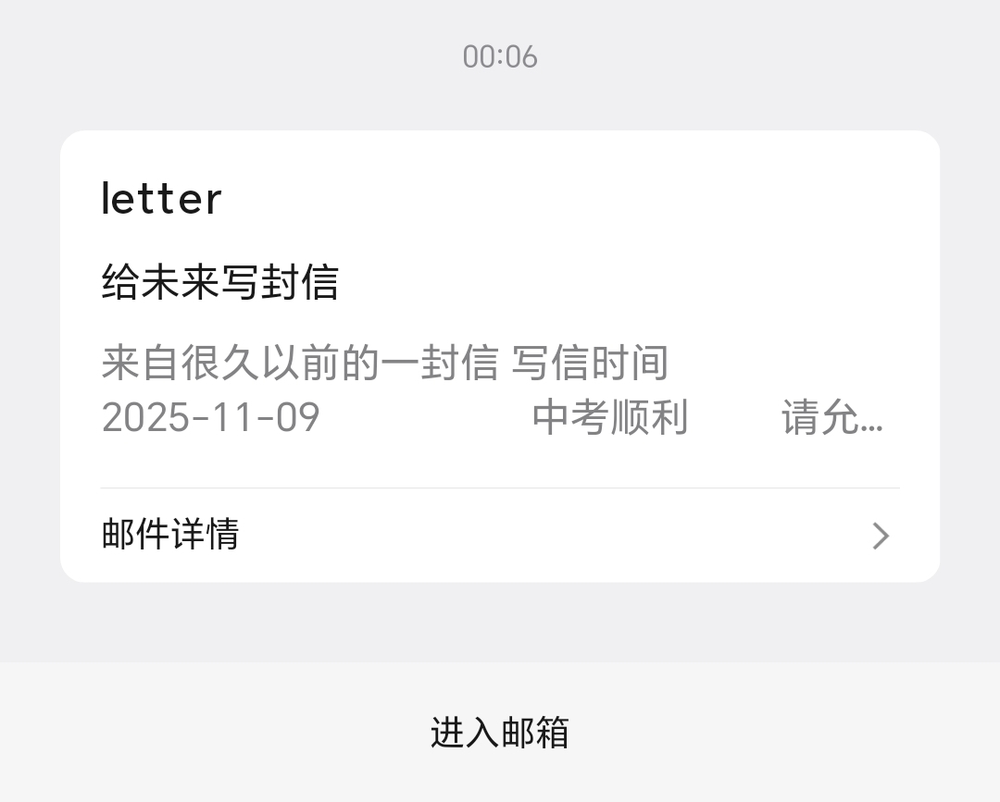

风🎐
@Starrynightwglf
@wmy072011 明天会顺利的

十二点
@wmy072011
考的很好哦 你想上的学校我都可以上哦 是公立是走读 不过你妈妈最近在逼着我住宿 但我不会听的啦
你让我每天都开心一点 我知道啦 虽然我现在此时此刻很难受 但忽然收到你这封信我还真是有点惊喜 谢谢你呀 如果你也能每天都开心点就好了
明天会顺利的
我爱你 十二点 https://t.co/WfFOcCSsuV